Back when my wife and I were having our children, we lived in a small town called Geneseo, New York. Geneseo had the structure of a nine-cell CA neighborhood. That is, the town consisted of nine blocks: three blocks in either direction, said blocks delimited by four streets running north-south and four streets running east-west. The richest people lived in the central block, the poorest people lived in the northwestern block, and our little family lived in the southwestern block. Diagonal neighbors count in cellular automata, so if the Geneseo of 1976 had been a cellular automaton, it would have been correct to say that we were neighbors of the rich people, but not of the poor people. In practice Geneseo and the surrounding countryside was usually covered with snow. Many days I would leave the CA neighborhood of family and job to go cross-country skiing through the unspoiled miles of powder. I never skied for the fitness or the exercise of it, mind you, I skied as a way to get out in the woods to marvel at the sunlight or at the falling snow.
Those were good times, the best, but these are good times too. I'm glad to be writing this manual for this software. In my book Mind Tools, I say that mathematicians view the world five ways: as Number, as Space, as Logic, as Infinity, and as Information. Skiing in Geneseo, thinking about relativity, I thought the world was Space. Before Geneseo, in graduate school at Rutgers, I'd thought the world was Logic. After Geneseo, in Heidelberg, studying Georg Cantor's writings on theology and set theory, I thought Infinity was where it's at. And then towards the end in Lynchburg, when I was writing Mind Tools so I could move to Silicon Valley, I put my head into Information. I never did Number--Number always seemed too brutally empirical. But now it occurs to me that CAs have a strong number component. The first rules we will look at actually are ten-bit numbers.
How many different eight-neighbor 1-bit totalistic rules are there? A rule like this is completely specified by a ten-entry lookup table which gives the new cell value for each of the ten possible neighborhood NineSums. Each of the entries has to be 0 or 1, so filling in such a lookup table involves making ten consecutive binary decisions, which can be done in 210 different ways. 210 is 1024, a number which occurs so often around computers that we call it "one K" for short. So there are a shade more than a thousand different eight-neighbor 1-bit totalistic rules, although some of them may in fact look and act the same as others. If you load RC, choose Vote, and keep pressing n, you will see lots of different randomly selected rules of this nature. Pressing Shift-N will bring you back to Vote, and pressing e will make the rules more colorful. If you press a and go to the control panel you can directly enter a "rule number" between 0 and 1023 into the "Rule Number" slot.
Why is Vote my favorite of all totalistic rules? Two reasons: Vote has a "real world" look to it, and the rule behind Vote is based on a philosophically interesting idea. To get a good big picture of Vote in action, boot up JC and load Vote. Let it run for a bit, then hit r to randomize and let it run some more. Do this a few more times. What you will observe is that Vote spontaneously aggregates a random sea of cells into large shifting shapes of the kind that the Surrealist artist Max Ernst called lop-lops. The lop-lops start out with fairly convoluted edges, but as time goes on, the edges get smoother and smoother.
If you let Vote run long enough, one of two things happens: i) The
screen gets eaten by one color, save for a few little oscillators here
and there; or ii) The screen stabilizes with a vertical or a
horizontal stripe, and with a periodic oscillation taking place along
the stripe's edge. The basic thing Vote does is to shrink isolated
areas. Regions of sharp curvature are rounded off.
Gérard Vichniac,
the inventor of Vote, compares Vote's dynamics
to surface tension and to the process of annealing metal.

In the high-res format of JC, Vote's oscillators tend simply to look like annoying "turd bits," but if you run Vote in RC you can see that the oscillators have an interesting structure of their own. These small patterns can arise in two flavors: black on white and white on black. Two fairly common ones are twizzler and robotman. (Giving colorful names to CA rules and patterns is a hacker tradition.)
A fun thing to do to Vote in RC is to turn off the Wrap, blank the screen, turn on the frame, and then turn on a single cell touching the frame. Watch how the "information" of the turned-on cell's existence travels around the loop! If you turn on another cell or two near the frame, the frame will start growing in. Once it is more than three cells thick, you can switch the frame back off, leading to concentric rings of back and white cells. Another interesting thing to do in RC is to get a pattern with a stripe in it, and then put the random mask by the stripe's edge. You can watch the "noise" being propagated down along the edge.
I still haven't told you what the rule for Vote is. Recall that Vote is totalistic, meaning that each time a cell is updated, the NineSum of the cell and its eight neighbors is formed. The idea behind Vote's rule is that if most cells in your neighborhood are 1, then you go to 1, and if most cells in your neighborhood are 0, then you go to 0. What do I mean by "most cells in your neighborhood?" Since there are nine cells in your neighborhood, the most obvious interpretation is to assume that "most" means "five or more". Here is the lookup table for this simple majority rule. (The meaning of "Totalistic Code" will be explained below.)
| Majority: Totalistic Code 1111100000b = 992d | ||||||||||
|---|---|---|---|---|---|---|---|---|---|---|
| NineSum | 0 | 1 | 2 | 3 | 4 | 5 | 6 | 7 | 8 | 9 |
| NewState | 0 | 0 | 0 | 0 | 0 | 1 | 1 | 1 | 1 | 1 |
You can run this rule by inputing the RuleNum 992 to RC's Vote, or you can run it in JC by loading t(992) as explained below. Run it on a random start screen a few times. What do you see? You see a pattern that evolves through a few dozen steps and then freezes up at some rigidly gerrymandered division of black and white.
In creating Vote, Vichniac had the idea of allowing more change at the boundaries between zeroes and ones. What if whenever a candidate loses an election very narrowly, he or she is put into office and, conversely, someone who achieves only a slight majority of votes is sent back home! Would this be a politically good thing? It might be. One effect would be that movements on the verge of taking power would get control sooner. But then when the growing movement inched into slim majority, it would suddenly lose power. The effect would be that in certain areas one would have ever-changing coalitions striving to reach a stable 60% majority. Under the Vote rule, Nixon would have been made president instead of Kennedy, which is probably not the most thrilling of prospects, though it's fun to imagine what would have happened next. Would Oswald have bothered to shoot Nixon? If he had, would sympathy for the Republicans have boosted their vote share up to a power-losing 55%, thus letting Kennedy win his second election bid? In any case, the idea behind Vote is most succinctly expressed by a lookup table.
| Vote: Totalistic Code 1111010000b = 976d | ||||||||||
|---|---|---|---|---|---|---|---|---|---|---|
| NineSum | 0 | 1 | 2 | 3 | 4 | 5 | 6 | 7 | 8 | 9 |
| NewState | 0 | 0 | 0 | 0 | 1 | 0 | 1 | 1 | 1 | 1 |
Here is an interesting variation on Vote. What if, instead of simply reversing the majority decision for "close election" values of 4 and 5 and always defying the majority, we just did it sometimes? If we have access to a source of random bits R, we can have a randomized election rule, VoteRan.
| VoteRan | ||||||||||
|---|---|---|---|---|---|---|---|---|---|---|
| NineSum | 0 | 1 | 2 | 3 | 4 | 5 | 6 | 7 | 8 | 9 |
| NewState | 0 | 0 | 0 | 0 | R | 1 - R | 1 | 1 | 1 | 1 |
You might try writing a program for VoteRan in JC. In action, VoteRan looks a lot like Vote, but it does not have any stable oscillators. The reason is that the randomness will wreck any of the neat little twizzler type coalitions that Vote allows. Where do the random bits R come from? In JC, we use an external algorithm to generate pseudorandom bits. By using several planes of randomness we can get different distributions of Rs. If very few of the Rs are 1, then VoteRan will act almost like Majority. If we set the density so that more of the Rs are 1, then VoteRan acts more like Vote.
Note however that as it uses external randomness,
VoteRan
is not a pure CA. It is in fact possible to run a kind of CA rule in
the background to generate random bits; this is what
Toffoli and Margolus generally do.

Let's get back to pure CAs, totalistic one-bit CAs like Vote. The
sequence of ten binary bits making up the lookup tables for Majority
and Vote can be thought of as a single ten-digit number. Rather than
putting the #0 entry in the leftmost position, it is customary to put
the #9 digit leftmost. Thus the rule for Majority can be thought of
as the binary number 1111100000, and the rule for Vote is
1111010000. In the more compact decimal form, these numbers are
992 and 976 respectively. The version of Vote which is implemented in
RC is designed so that you can press a to get to the control
panel and directly input a desired totalistic code number. In
addition, when this version of Vote is running, pressing n will
switch the rule to a randomly selected totalistic code number.
Totalistic rules with low bit of 1 have a flicker to them which can be
annoying. The flicker arises since pools of state zero always jump to
state 1. I have written Vote so that the n key always selects
random rules with low bit equal to 0.
 Whenever you want to see how a random rule would look with the low bit
on, simply press l to toggle it. Also keep in mind that
pressing e will make these rules more colorful.
Whenever you want to see how a random rule would look with the low bit
on, simply press l to toggle it. Also keep in mind that
pressing e will make these rules more colorful.
Suppose that you are running Vote in RC, and you press n until you find a rule whose behavior interests you. If you now press a, you will see the control panel, and you'll be able to write down the totalistic code number of the rule you have. How can you run this rule in JC?
Transfer to the JC directory and type:
ca
l
t(n)
Try looking at totalistic rule 936. Why do I mention 936? 936d = 1110101000b, which means that this rule is like Vote except that it reverses the outcome of election values 3 and 6 (instead of reversing the outcome of election values 4 and 5). If you run it you'll see a fuzzy messy Vote.
Before we move on to more general sorts of rules, we need to talk about the most famous totalistic rule of all: the Parity rule of Edward Fredkin.
| Fredkin: Totalistic Code 1010101010b = 682d | ||||||||||
|---|---|---|---|---|---|---|---|---|---|---|
| NineSum | 0 | 1 | 2 | 3 | 4 | 5 | 6 | 7 | 8 | 9 |
| NewState | 0 | 1 | 0 | 1 | 0 | 1 | 0 | 1 | 0 | 1 |
The way Fredkin's rule works is to form the 9-sum of all your
neighbors and then to make your new value 0 if the 9-sum is even, and
1 if the 9-sum is odd. Fredkin is one of the rare rules that can be
described by a compact formula instead of by an explicit lookup table.
To understand the formula, you need to know that  (XOR:
exclusive or) is a logical operation such that if A and B are binary
bits, then A
(XOR:
exclusive or) is a logical operation such that if A and B are binary
bits, then A  B is 0 if A = B and A
B is 0 if A = B and A  B is 1 if A differs
from B. Another way of looking at it is to say that if B is 0, then
A
B is 1 if A differs
from B. Another way of looking at it is to say that if B is 0, then
A  B is just A, and if B is 1, then A
B is just A, and if B is 1, then A  B is the opposite
of A.
B is the opposite
of A.
If you run the Parity rule from a random startscreen, nothing interesting will happen. But if you start Parity from a dot, block, or any other simple pattern, the workings of the rule will in time produce nine copies of the original seed! There is a sense in which a CA world running Parity has automatic self-reproduction, for any pattern you put down in this world gets copied ninefold.
The fact that Fredkin's Parity rule is defined by a formula makes it easy to generalize it to other dimensions. The Parity movie on our 3D disk shows a three-dimensional six-neighbor Parity rule.
These one-bit totalistic rules look nicer if you equip each cell with an additional bit of memory. Each time we compute a cell's new state, we take its old state (zero or one) and store this bit to the left in the "echo" bit. Thus each cell can have one of four possible two-bit states:
| State Number | State Bits | Interpretation |
|---|---|---|
| (Decimal) | (Binary) | |
| 0 | 00 | Was Off & Is Off |
| 1 | 01 | Was Off & Is On |
| 2 | 10 | Was On & Is Off |
| 3 | 11 | Was On & Is On |
The version of Vote which comes up initially in RC has no echo. If you press e, then you will see the rule with echo. Strictly speaking, the rule with echo is a different rule that might be called VoteMem. The version of Vote stored in JC is actually VoteMem. In general, you can get JC to show the "Mem" version of a totalistic rule with the code number n by entering th(n) as a rulename. "Th" stands for "totalistic rule with history."
You might try making a copy of Vote.PAS and editing it to get a rule which remembers the last 7 values of each cell. The "inland" cells in the middle of the "on" regions stabilize at the color 11111111b=256d (which happens to be red in the default palette). The "at sea" cells in the middle of the "off" regions stabilize at the color 00000000b (black). But the border cells range through a spectrum of 256 possible colors that depend on how the elections have been running in their neighborhood. If you press Alt-F9 and tell the prompt you want to change the color of state 255 to 0 (CGA) or to 0, 0, 0 (VGA), then VoteMem will have the appearance of lovely colored strings.
Why don't the high "color" bits interfere with the running of the underlying Vote rule? Because the program only checks the lowest bit of each cell's neighbor. Most of the rules we look at in RC and JC have this property: each cell sees only the lowest bit of its neighbors' states. The main reason we wrote these rules this way was to make them run faster, particularly in the case of the 64K cell array of JC. (Some of the rules which look at more of their neighbor's state bits are ASCII, Rug, Langton, Hodge, and Heat.)
Even more striking than a full seven-bit VoteMem is the JC rule called VoteDNA.
Fredkin's Parity also looks more colorful with memory. Try FredMem in JC. This rule has seven bits of memory. Note that FredMem will not self-organize anything from randomness as does Vote; FredMem needs to be started from a small block or from a simple pattern like Square.
Some last remarks on viewing random totalistic rules with echo by pressing n while running Vote in RC. A lot of them look really great if you put the program in wrap mode, blank the screen, and then press f twice to pulse on a white frame for one cycle. Making one or several of the masks thin and vertical and putting them on the right side of the screen and then turning on jog mode makes cool things too. Remember that if you find something really great you can save the ruletable under a name of your choosing.
If we think of this as a semitotalistic rule, we can express it in a table similar to the totalistic tables above. Note however, that where a totalistic table is one-dimensional, a semitotalistic table is two-dimensional. In each case, the column you look at depends on your neighborhood sum (NineSum for totalistic and EightSum for semitotalistic).
In the case of a semitotalistic table you also need to decide which row to look at, and this is determined by your present state.
| EightSum | |||||||||
|---|---|---|---|---|---|---|---|---|---|
| CellState | 0 | 1 | 2 | 3 | 4 | 5 | 6 | 7 | 8 |
| 0 | 0 | 0 | 0 | 1 | 0 | 0 | 0 | 0 | 0 |
| 1 | 0 | 0 | 1 | 1 | 0 | 0 | 0 | 0 | 0 |
The concept of a semitotalistic rule includes the concept of the totalistic rule, so we can, for instance, represent Vote as a semitotalistic table if we want to. (If you use the Rule Editor to look at a totalistic rule in RC you will see it represented this way.)
| EightSum | |||||||||
|---|---|---|---|---|---|---|---|---|---|
| CellState | 0 | 1 | 2 | 3 | 4 | 5 | 6 | 7 | 8 |
| 0 | 0 | 0 | 0 | 0 | 1 | 0 | 1 | 1 | 1 |
| 1 | 0 | 0 | 0 | 1 | 0 | 1 | 1 | 1 | 1 |
As with Vote, Life looks better if we "echo" the immediate past state into an extra bit, so that there are actually four possible states 00b, 01b, 10b, and 11b. Even if there are higher bits turned on, our programs will in fact only look at the neighbors' low bits when forming the EightSum. This is done primarily for increased program speed, and secondarily as a way of pruning down the number of possible rules we will initially look at. If we call Life with a memory bit LifeMem, we get a semitotalistic table that looks like this in binary and in decimal:
| EightSum | |||||||||
|---|---|---|---|---|---|---|---|---|---|
| CellState | 0 | 1 | 2 | 3 | 4 | 5 | 6 | 7 | 8 |
| 00 | 00 | 00 | 00 | 01 | 00 | 00 | 00 | 00 | 00 |
| 01 | 10 | 10 | 11 | 11 | 10 | 10 | 10 | 10 | 10 |
| 10 | 00 | 00 | 00 | 01 | 00 | 00 | 00 | 00 | 00 |
| 11 | 10 | 10 | 11 | 11 | 10 | 10 | 10 | 10 | 10 |
| EightSum | |||||||||
|---|---|---|---|---|---|---|---|---|---|
| CellState | 0 | 1 | 2 | 3 | 4 | 5 | 6 | 7 | 8 |
| 0 | 0 | 0 | 0 | 1 | 0 | 0 | 0 | 0 | 0 |
| 1 | 2 | 2 | 3 | 3 | 2 | 2 | 2 | 2 | 2 |
| 2 | 0 | 0 | 0 | 1 | 0 | 0 | 0 | 0 | 0 |
| 3 | 2 | 2 | 3 | 3 | 2 | 2 | 2 | 2 | 2 |
In RC, the e key toggles between regular Life and LifeMem. In JC, the rule we call Life is actually LifeMem. To see pure Life, use the colorpalette Mask1. If you run Life in JC you will notice that the activity of Life slowly dies down. At first Life seethes around like a hungry fungus, but then it settles into a variety of static configurations and short-period oscillators. Many of these patterns have names.
One of the most famous Life patterns is the glider, a pattern which moves across the cellular automaton array at a speed of one diagonal cell every four generations. If a CA rule uses nearest neighbors only, the fastest that a pattern can move is one cell per generation. This is sometimes called "the speed of light," so one can say that Life's gliders move at one-fourth the speed of light. If you want to see a lot of gliders, you can view William Gosper's "glider gun" by feeding the pattern GlidrGun to the JC Life.
Another pattern which can be interestingly fed to JC Life is the "R
pentomino" RPent,
a humpbacked five-cell start pattern
which creates an amazing amount of activity. Run this one with the
screen set to Plane (No Wrap) rather than to Torus (Wrap), or the
gliders the pattern emits will wrap around and wreck it.
RPent keeps growing and evolving through 1103 generations,
at which time a 51 by 109 pixel rectangle of stable debris is left, as
well as six receding gliders. The fact that the plane JC WorldType
keeps the border cells in state 0 causes the gliders that hit it to
become blocks.

In the RC implementation of Life, you can keep the rule going by leaving the "randomizing mask" on. A particularly fruitful combination seems to be a small randomizing mask right next to a small ones mask. Various configurations emerge and wriggle across the screen, sometimes stumbling over the old debris, and sometimes setting the debris on fire. These masks can also be constructed in JC by using the extra bits. One might for instance turn on a square of cells in Plane #3, repeatedly Randomize Plane #4, and switch on any Plane #0 cell whose #3 and #4 bits are on.
Another interesting thing to do with Life in RC is to put the rule into "jog mode" by pressing j, turning off masks 0, 2, and 3, and turning mask 1 into a thin vertical bar at the right side of the screen. All kinds of great stuff boils off the bar. Note that in jog mode, one is effectively scanning the screen and the blocks to the right through an empty cell space, so what you see streaming out of the 1 block can be thought of as its wake.
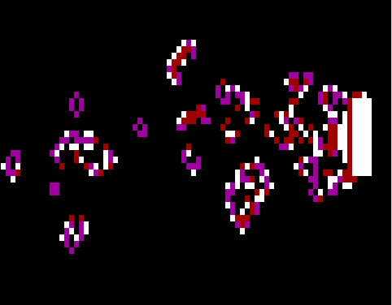
The RC Life rule, run in Jog mode with a OneBlock spewing a wake.
One way to generalize the rule for Life is to regard Life as specified by four integer parameters L, U, K, and Y and the altered conditions (2) and (3):
For normal life, L, U, K, and Y are 3, 3, 2, and 3 respectively. In his search for an interesting three-dimensional version of Life, Carter Bays adopted a similar notation for general Life rules. Bays's favorite three-dimensional life (where each cell actually forms a TwentySixSum of neighbors instead of a mere EightSum) is what we would call LUKY 5545. This is the rule which we show as our other 3D movie, Life3D.
In the RC Life, I've fixed the program so that pressing k or l will reduce that parameter by 1 (cycling up to 8 after the value of 0); and pressing u or y will increase that parameter by 1 (cycling down to 0 after the value of 8). Pressing Shift-K, Shift-L, Shift-U, or Shift-Y will restore the parameters to their initial values of 2, 3, 3, and 3. In all of these variants, e toggles the echo color-map on and off. None of the LUKY variations of Life seems to be nearly as interesting as the real thing.
As before, a cell's EightSum is going to be a sum based on the states of the cell's eight nearest neighbors. As in Life, a neighbor in state 1 contributes 1 to the EightSum, and a neighbor in state 0 contributes nothing to the EightSum. But what about neighbors in state 2? Shall we add two to the EightSum for each neighbor in state 2? No.
Only the state 1 neighbors will contribute to the EightSum, and the state 0 and the state 2 neighbors will be be ignored when constructing this sum. In terms of bits, this means that we are only going to look at the lowest bit of each neighbor's state number. As in the rule LifeMem, our EightSum will be the sum of our neighbors' low bits. We will sometimes speak of the low bit as the firing bit, and of the sum of the firing neighbor bits as the firing EightSum.
With this in mind, Brain's definition can be given in words, or as a table.
| EightSum | |||||||||
|---|---|---|---|---|---|---|---|---|---|
| CellState | 0 | 1 | 2 | 3 | 4 | 5 | 6 | 7 | 8 |
| 0 | 0 | 0 | 1 | 0 | 0 | 0 | 0 | 0 | 0 |
| 1 | 2 | 2 | 2 | 2 | 2 | 2 | 2 | 2 | 2 |
| 2 | 0 | 0 | 0 | 0 | 0 | 0 | 0 | 0 | 0 |
Brain was invented by Brian
Silverman in 1984.
Silverman originally called the rule
"Mutants," and spoke of cells in state 0,1, or 2 as dead,
live, or ghost cells respectively.
 He came upon the rule because he
was looking for the best CA rule that has a lot of
"gliders" in the general sense of a pattern that moves.
Silverman points out that Brain's three states are good for gliders
for the following reason.
He came upon the rule because he
was looking for the best CA rule that has a lot of
"gliders" in the general sense of a pattern that moves.
Silverman points out that Brain's three states are good for gliders
for the following reason.
In a symmetric CA rule (and all semitotalistic rules are symmetric under flips and 90 degree rotations) a given CA pattern will have no reason to move in one direction rather than another unless the pattern itself is asymmetric. Setting one live cell next to another creates an asymmetry between north-south and east-west. The remaining symmetry is broken by gluing a pair of ghost cells to one side or the other of the live block.
In other words, the ghost state acts as a buffer to keep the glider from trying to move in both directions at once. Silverman went to some trouble to convince Norman Margolus to run the rule on Tommaso Toffoli's new 256×256 CAM-6, and the rule was an immediate sensation. Silverman had been using his Logo Apple program, "The Phantom Fishtank," to run Brain on a 40×40 grid until then, so the largescale vigor of Brain must have been something of a surprise.
In renaming the rule "Brain" instead of "Mutants," Margolus and Toffoli propose an analogy between Brain's cells and an actual brain's neurons. A neuron-like Brain cell can be ready, firing, or refractory. "A ready cell will fire when exactly two of its eight neighbors are firing; after firing it will go into a refractory state, where it is insensitive to stimuli, and finally it will go back to the ready state."
I like to think of the brain cells as people that are awake, partying, or resting. Whenever a cell of Brain is partying (state 1), it is bound to be resting (state 2) in the next timestep. Having rested, it goes back to being awake (state 0) at the next timestep. It remains quietly awake until exactly two of its neighbors are partying. At that time the cell parties for one glorious tick, grabs a tick of rest, and returns to its waking state 0 vigil for the next chance to party.
When I first saw Brain running, I was astonished. Instead of dying out like Life, or slowly oozing like Vote, Brain cooks. Run JC and load Brain if you haven't yet done so. Practically any start configuration--from an adjacent pair of dots up to a fully randomized screen--leads to more or less the same equilibrium state, a state which is, so far as I've been able to tell, immortal. Start Brain in JC and leave it running for the day--when you come home, it'll still be "thinking." Brain stays alive.
There are of course many rules that stay alive in the trivial sense of turning the screen into what William Gosper calls "seething dog barf." What makes Brain so remarkable is that it is drawn to a chaotic attractor that is a stochastically stable equilibrium between dead black and milky jitter.
Brain's equilibrium typically consists of something like 92% cells in
state 0, 3% in state 1, and 3% in state 2.
 The equilibrium is populated by an interesting zoology of self
propagating structures which are born, spin off progeny (usually quite
unlike themselves), and wipe each other out in fantastic explosions
which spawn ever new denizens of this CA.
The equilibrium is populated by an interesting zoology of self
propagating structures which are born, spin off progeny (usually quite
unlike themselves), and wipe each other out in fantastic explosions
which spawn ever new denizens of this CA.
The ability to reach equilibrium depends on the size of the cell space which Brain runs in. Although Brain in JC appears to be immortal, the cell spaces accessible to the RC Brain have not been big enough to maintain equilibrium Brain activity indefinitely in any instances I have observed. Even the split-character small-font VGA space of 80×100 cells is not big enough. (Note that this space is exactly one-eighth the area of JC's 320×200 cells.) It might be interesting to graph the average of, say, 100 random-starts' lifetimes as a function of the Brain space's area. Is there some "critical value" above which the expected runtime suddenly becomes effectively infinite?
At first sight Brain reminded me of the hallucinated paintings of Bosch and Brueghel where one sees fantastic things flying through the air: busy insects, witches on fish, fool-ships on wheels, haystacks teeming with demons, snouters wearing funnels, priests in flaps--all of them streaming left and right across the sky. North, south, east, and west they race across the Brain screen, these mad, purposeful inventions from nowhere, many of them aflame and trailing wisps of smoke that themselves take root and spread into great new Edsels of the sky.
I have observed three principal categories of Brainforms: haulers, butterflies, and the twizzler. Haulers move along the principal axes, butterflies move along the diagonals, and the twizzler stays in one spot. There are many kinds of haulers, but I know only one butterfly and one twizzler. At equilibrium, haulers predominate and a few butterflies are present. "Wild" twizzlers are exceedingly rare.
As their name suggests, haulers drag things, notably firing/refractory block pairs attached to either side. I call these pairs outriggers. A hauler can draw a loose outrigger or a tight outrigger, and each outrigger can pull outriggers of its own. If set aflame by a wellplaced spark (individual firing block), the outriggers give off wriggling clots of debris which evaporate or congeal into new haulers with their own outriggers. These reactions can cascade through several stages, so that in Brain, a "glider gun shooting glider guns" is not at all uncommon. Sometimes a pair of haulers pulling apart from each other may stretch out a vertical or horizontal chain or a diagonal Jacob's ladder.
To isolate a hauler, load Brain in RC. Turn off the 0, 1, 2, and 3 masks, press d for double-line mode, randomize with an r, and then press j to enter jog mode. You'll probably catch a hauler, and if not, keep pressing r till you do. One of the neatest things about haulers is the way that the cone inside their two chains of outriggers acts like a little factory, busily assembling repetitive chunks of debris.
You can isolate larger "factory ships" in JC Brain by pressing F3 to turn off the wrap, and by then using the arrow keys to erase all cells other than the members of your factory. Recall that when JC is in nowrap plane mode, scrolling something offscreen erases it. Judicious use of the JC Left arrow key emulates RC jog mode.
A more controlled way to experiment with haulers is to use the screen editor. In RC, turn off the masks, clear the screen with a z, and press the Ins key to activate the screen editor. Moving the arrow keys will move the colored cursor cell. If you press x, the cursor's color will stick to the cell it is on. If you press Shift-X, the cursor will be in "pendown" position, and you can leave a trail of marked cells. Pressing 0, 1, or 2 changes the cursor to the respective brainstates: off, firing, or refractory. Adding an extra spark here or there can cause very large changes in a hauler's exhaust pattern. All this can be done in JC Brain as well. When emulating jog with the arrowkeys, remember that if End has been pressed, the screen only jogs one pixel per tap.
The butterfly is to Brain what the glider is to Life. Like the glider, the butterfly moves diagonally at a speed of one cell per every four cell updates. You may need to actually hold a diagonally slanting straightedge against your screen to believe that the butterflies really do move at 45°. The flowing of the haulers makes one tend to perceive the butterflies as moving at half as large an angle. The illusion is contributed to by the fact that the butterfly gun shoots a stream of butterflies that has slope ¼.
Butterfly gun? I built my first one in June of 1988. If Gosper found Life's glider gun, I was determined to be the one to find Brain's butterfly gun, not that anyone besides me and Silverman particularly cared. A seed for a butterfly gun in operation is stored as BflyGun.JCP in JC. And here are the steps for building it yourself in RC. (I know that a much smaller butterfly gun exists. I saw it a month ago, but I've been too busy with this manual to catch it.)
Brain's haulers have a kind of assembly-line quality to them, particularly in jog mode. I suspect the proper tweaking can make a hauler that puffs out practically any kind of structure you need.
As mentioned above, I categorize Brainforms into: those that move in the principal directions (haulers), those that move in the diagonal directions (butterflies), and those that do not move (twizzlers). The analogy of Life, which has only one known diagonally moving form (the glider) suggests that there may be only one kind of butterfly. But something tells me there are lots of twizzlers, even though I've only found one. It consists of a four-cell block of state 1 cells with four state 2 cells attached pinwheel fashion, as shown in the illustration above.
What about generalizations of the Brain rule? Suppose we say a
Brainlike rule is specified by three parameters: N, the number of
refractory states, and L and U, where we suppose that a dead cell is
turned on if its EightSum satisfies
L  EightSum
EightSum  U. We might speak of Brain
NLU as a rule which has a dead state 0, a firing state 1, and
refractory states R1, R2, ...Rn. (We assume that
n>0.
U. We might speak of Brain
NLU as a rule which has a dead state 0, a firing state 1, and
refractory states R1, R2, ...Rn. (We assume that
n>0. ) With this
naming of states, Brain NLU has this description:
) With this
naming of states, Brain NLU has this description:
Given a cell in Brain NLU, form the cell's EightSum.
Standard Brain is Brain 122. In RC it is possible to look at the other Brains by pressing the n, l, and u keys. Each press of n increments the number of refractory states until a maximum of 7 is reached, after which this N value cycles back down to 0. As with Life, each press of u increments the U value, up till 8 at which point it wraps to 0; and each press of the l decrements the L value, down to 0 at which point it jumps up to 8. Pressing Shift-N, Shift-L, and Shift-U restore the values to their starting Brain values of 1, 2, and 2.
If we leave L and U alone and simply add to N, we find increasingly serene versions of Brain. The best way to seed these guys, by the way, is with a small, randomizing 3 mask (press 3 to toggle it). With all the insulating refractory states behind them, the haulers in, say, Brain 722 never seem to give off any sputter.
If you increase U without changing L, not too much new happens at the high state end. Brain 723 looks just like Brain 722. At the low state end, Brain 123 is unpleasantly chaotic, but Brain 223 is pretty cool. Things like yellow spark-chambers vie to take over domains.
Things really get exciting when we drop L down a notch. It's so easy to turn dead cells on that Brain 112 really boils. To calm things down, begin by adding a lot of refractory states. Go to, say, Brain 512. Now you'll see things sort of like paws with claws growing out from centers.
If you now boost U two clicks to get Brain 514 you get a particularly interesting rule. Turn off the 3 mask, and drag the 1 mask and the 2 mask to the screen center so that their corners overlap. Now press z to zero the screen outside the masks. Now, while ripples still spread out from the masks, turn off the 1 and then turn off the 2. You will get a special sort of "ram's-horn" double spiral which is characteristic of a family of CAs called Zhabotinsky reactions. As we shall see, many different rules lead to the stable spirals of the Zhabotinsky reaction.
You can duplicate this last experiment in JC by loading n(51499) and using the editor to cut out two black squares with one corner overlapping to make a kind of bow-tie shape. Alternately you can first get a healthy rainzha pattern going and then feed that to n(51499). You can actually step down to n(11499) and still have some spirals.
Once you are in the control panel you press r to do something to the rule: Save, Load, or Edit. The Save selection allows you to make a permanent copy of the rule you were just looking at. The Load selection offers you a list of rules which have been previously saved (RC comes with about 30 of them). The Edit selection shows you the semitotalistic lookup table for the present rule.
In the rules shown by Random, a cell can have any state between 0 and 15. The odd-numbered states are thought of as being "firing states." Put differently, a state is a firing state if its binary expansion has a low bit of 1. In these rules, as in Brain, a cell's EightSum is not the sum of all the neighbor state values. When we say EightSum here, we really mean the firing EightSum of the eight neighbor cells' low bits.
As an introduction to the semitotalistic rule tables, let's look at some rules that are a cross between Life and Brain. What Lifelike and Brainlike rules have in common is two parameters L and U such that:
Lifelike rules are characterized by two additional parameters K and Y such that:
Brainlike rules have a parameter N such that:
Putting this all together we get a general type of rule that makes me think of one of my fictional characters, a woman named Rainbow, who appears both in Software and in Wetware. These rules, which are a cross between Life and Brain, make me think of Rainbow because of her immortal lines:
"We really gonna do it!" the green-haired girl exclaimed, and giggled
shrilly. "I ain't never ate no live brain before!"

These rules can be specified by five parameters: N, L, U, K, and Y, so I am going to speak of them as NLUKY rules. N, L, and U are as in Brain; L, U, K and Y are as in Life. So what is the exact definition of an NLUKY rule?
Before I specify the rule, I'd like to improve my syntax for defining rules. From now on, when possible, I will specify a CA rule in terms of a general cell and, to make my specifications mathematically concise, I will use these conventions.
The general cell's name is EveryCell. ("Oh ZeroState, thou comest when I had thee least in mind!")
The numerical value of EveryCell's state is C.
The numerical value of EveryCell's firing EightSum is 8FiringC.
The numerical value of EveryCell's next state is NewC. With these conventions, the NLUKY rules are as follows.
So now Life is NLUKY 03323; and Brain is NLUKY 12299 (where using the two nines is to remind us that no firing Brain cell is allowed to keep firing). I've found three other interesting kinds of NLUKY rules: Cooties, Faders and RainZha. All of these look fine with N set way up at 7, so let's think of them that way. Cooties is NLUKY 72223; Faders is NLUKY 72222; and RainZha is NLUKY 72322. Go into RC's Brain rulestyle and use the Rule load command or the direct access to the NLUKY keys for a closeup look at these three.
Cooties is almost too lively, crawling around like mad lice. Faders is
more sedate, but by no means unlively. You can turn off wrap, fence
Faders in with a black or a white frame, turn off all the blocks, and
still the little guys keep crawling around. RainZha generates a
special kind of spiral CA pattern which is known as "the
Zhabotinsky reaction."

In order to familiarize you with the use of the Rule table in RC, suppose that you go back to RC and use the Rule Editor command to look at RainZha's semitotalistic lookup table.
| Firing EightSum | |||||||||
|---|---|---|---|---|---|---|---|---|---|
| CellState | 0 | 1 | 2 | 3 | 4 | 5 | 6 | 7 | 8 |
| 0 | 0 | 0 | 15 | 15 | 0 | 0 | 0 | 0 | 0 |
| 1 | 0 | 0 | 0 | 0 | 0 | 0 | 0 | 0 | 0 |
| 2 | 8 | 8 | 8 | 8 | 8 | 8 | 8 | 8 | 8 |
| 3 | 0 | 0 | 0 | 0 | 0 | 0 | 0 | 0 | 0 |
| 4 | 12 | 12 | 12 | 12 | 12 | 12 | 12 | 12 | 1 |
| 5 | 0 | 0 | 0 | 0 | 0 | 0 | 0 | 0 | 0 |
| 6 | 4 | 4 | 4 | 4 | 4 | 4 | 4 | 4 | 4 |
| 7 | 0 | 0 | 0 | 0 | 0 | 0 | 0 | 0 | 0 |
| 8 | 6 | 6 | 6 | 6 | 6 | 6 | 6 | 6 | 6 |
| 9 | 0 | 0 | 0 | 0 | 0 | 0 | 0 | 0 | 0 |
| 10 | 2 | 2 | 2 | 2 | 2 | 2 | 2 | 2 | 2 |
| 11 | 0 | 0 | 0 | 0 | 0 | 0 | 0 | 0 | 0 |
| 12 | 0 | 0 | 0 | 0 | 0 | 0 | 0 | 0 | 0 |
| 13 | 0 | 0 | 0 | 0 | 0 | 0 | 0 | 0 | 0 |
| 14 | 10 | 10 | 10 | 10 | 10 | 10 | 10 | 10 | 10 |
| 15 | 14 | 14 | 15 | 14 | 14 | 14 | 14 | 14 | 14 |
The RainZha table is isomorphic but not identical to the rule NLUKY 72322. The reason I renamed some of the even states in RainZha rule is that the sixteen primary colors of textmode graphics have standard four-bit number names, and RC runs fastest if we use the color names which textmode is used to.
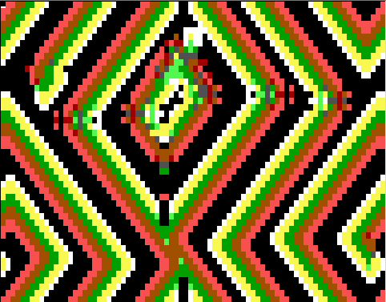
The RC RainZha rule run in DoubleMode. This pattern appeared a few dozen cycles after a random start.
Textmode's natural color map is summarized by the rubric:
I, R, G, and B stand for Intensity, Red, Green, and Blue. Thus 1010 is light green, and 0101 is purple. The firing states are those states which have a low bit of 1. As the low bit is the blue bit, this means that firing states are those colors which have blue in them. The correspondence between NLUKY 72322, RainZha, and screen color goes like this:
| NLUKY 72322 State | RainZha State | Nybble Value | IRGB Color |
|---|---|---|---|
| 0 | 0 | 0000 | Black |
| 1 | 15 | 1111 | White |
| 2 | 14 | 1110 | Yellow |
| 4 | 10 | 1010 | Light Green |
| 6 | 2 | 0010 | Green |
| 8 | 8 | 1000 | Gray |
| 10 | 6 | 0110 | Brown |
| 12 | 4 | 0100 | Red |
| 14 | 12 | 1001 | Pink |
Recall that the firing EightSum 8FiringC is calculated by adding up the lowest bits of the state numbers in EveryCell's eight nearest neighbors. Your lowest bit is on if and only if you are odd. Your lowest bit is off if and only if you are even.
As long as the low bit is the firing bit, the definition of NLUKY imposes this constraint: NLUKY state 1 must be an odd number, and all of NLUKY's other states must be even numbers. I choose to impose the additional constraints that NLUKY's firing state should be as bright as possible, and that NLUKY's ready state should be as dark as possible, so I represent NLUKY 0 by 0000 and NLUKY 1 by 1111. But NLUKY states 2, 4, 6, 8, 10, 12, and 14 can really be represented by any even numbers at all.
John has fixed JC so that it is easy to look at NLUKY rules in there as well. Simply go into JC, enter L for "load" and then instead of giving a rule-name, write n(* * * * *), where the stars stand for the NLUKY numbers you want to look at (no spaces between the numbers). Thus a big version of RC's Faders will appear if you enter L and then enter n(72222) to tell the program you want to see NLUKY 72222. Since JC allows up to 256 states, you can actually have as many as 127 of the even-numbered non-zero refractory states. The rule which we have stored under the name "Faders" in JC is actually NLUKY 1272222. Sometimes the only way to turn an RC ruletable into a JC rule is to write a program which describes the rules (Balloons is an example of this), but in the case of the NLUKY rules, it's easy.
Very many CA programs produce the spiral kinds of patterns which occur in RainZha. MessZha and MessZha2 are two more of them in RC. The JC rules Zhabo and Hodge make this pattern too. These rules are collectively known as "Zhabotinsky rules."
Exploring Random with the rule editor and the n key, you will find lots of things like Brain, like Vote, and like badly tuned Life. Keep in mind that pressing the "Sparseness" key v will make
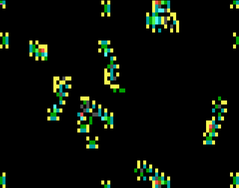
The RC rule Crawlers, a randomly found rule rather similar to Brain. Isolated small objects are "haulers;" object on right of screen is a "hauler plus outrigger."the new random rules have more zeroes in their lookup tables. Generally the sparser rules are more interesting, with less of a propensity to turn into seething dogbarf. The ugliest rules are the "non-legal" rules where state 0 with zero EightSum goes to a nonzero state which then cycles right back to 0. You can also try out random semitotalistic rules in JC. If you press l to load a rulefile and then answer r(66), JC will create a random semitotalistic rule with 66% of the entries in its lookup table equal to 0. In JC you can get random generalized rules as well by pushing ?. The sparseness of these rules will be the same as your last r(*) request.
If you are looking for Brainlike rules in RC, it's a good idea to
leave the program in jog mode while you're pressing n; this has the
effect of trolling for gliders. It's also a good idea to leave the
random mask 3 on in a corner of the screen. Some random rules look
interesting if you run them in non-wrap mode with the frame turned to
white. If you find a good rule be sure to save it before it's too
late! If you don't save it you probably won't see it again, for there
are 169×16 different ways to fill in the ruletable.

When Paul Dirac first conceived that the electron might have an antiparticle known as the positron, he thought of positrons as "holes" in the electric charge field. Instead of working with a background of zero (non-firing) cells and focusing on the firing cells, we can take an antimatter approach and focus on non-firing cells in a background of firing cells. Thus we might conceive of an AntiLife rule as follows, where we write the 1-state row before the 0-state row to increase the resemblance to Life:
| Firing EightSum | |||||||||
|---|---|---|---|---|---|---|---|---|---|
| CellState | 0 | 1 | 2 | 3 | 4 | 5 | 6 | 7 | 8 |
| 0 | 1 | 1 | 1 | 1 | 1 | 0 | 1 | 1 | 1 |
| 1 | 1 | 1 | 1 | 1 | 1 | 0 | 0 | 1 | 1 |
In AntiLife, the even "holes" play the part of the active cells. If an odd cell has 3 even neighbors it becomes even; if it is already even and it has 2 or 3 even neighbors it stays even, otherwise it anti-dies and goes back to odd. Brian Silverman suggested to me the idea of having rules where Life and AntiLife and Brain and AntiBrain run at the same time. These rules I call, respectively, SLife and SBrain. To construct SLife, we use states 0 and 1 to run Life, and we use states 2 and 3 to run AntiLife. So that the rules can take over connected domains of the screen, we also say that a Life background cell 0 can turn into an AntiLife background cell 3, and vice versa. When do these transitions take place? If a 0 Life cell has 7 odd neighbors it becomes a 3; and if a 3 has 7 even neighbors, it becomes a 0. You might want to try other versions of these transitions. Note that in the SLife table, state 3 is the passive state for AntiLife, and state 2 is the active state for AntiLife, so it might be logical to list row 3 before row 2. In this case I do list row 2 first to make the table look more symmetrical.
| Firing EightSum | |||||||||
|---|---|---|---|---|---|---|---|---|---|
| CellState | 0 | 1 | 2 | 3 | 4 | 5 | 6 | 7 | 8 |
| 0 | 0 | 0 | 0 | 1 | 0 | 0 | 0 | 3 | 0 |
| 1 | 0 | 0 | 1 | 1 | 0 | 0 | 0 | 0 | 0 |
| 2 | 3 | 3 | 3 | 3 | 3 | 2 | 2 | 3 | 3 |
| 3 | 3 | 0 | 3 | 3 | 3 | 2 | 3 | 3 | 3 |
We can do a similar trick with Brain, tying Brain and AntiBrain together into a six-state rule called SBrain, which you can find in RC. Note that in both these Rule/AntiRule combinations, the screen gets divided up into a black and a white domain, a little bit like in Vote. In these rules, I like to think of the white region as the land, and the black region as the sea.
Note also that there is always a lot of activity in SBrain and in SLife, because the continually firing land cells keep triggering activity in the sea cells, and the continually "holey" sea cells keep turning on active "holes" on the land.
One very striking rule which is yet another step past Brain is Brian Silverman's Balloons. Here Brain's haulers build up connected regions as in SBrain, but now the regions form membranes, grow, burst, and are eaten. I have copied the table for this rule over into the JC rule Balloons. By adapting this program, you can turn any RC ruletable into a JC rule.
One possible approach is to combine Brain with AntiLife. We run Brain on a "sea" background, and we run Life on a white "land" background, using "holes" (non-firing cells) in the white background as Life's active cells.
When running the same rules on both land and at sea, it makes sense to have symmetrical transition conditions for changing sea to land and land to sea. In SLife and SBrain the transition conditions were: a sea cell with 7 firing neighbors becomes a land cell and a land cell with 7 non-firing neighbors becomes a sea cell. This suggests a table like this:
| Firing EightSum | |||||||||
|---|---|---|---|---|---|---|---|---|---|
| CellState | 0 | 1 | 2 | 3 | 4 | 5 | 6 | 7 | 8 |
| (Brain is 0, 1, 2) | |||||||||
| 0 | 0 | 0 | 0 | 1 | 0 | 0 | 0 | 3 | 0 |
| 1 | 2 | 2 | 2 | 2 | 2 | 2 | 2 | 2 | 2 |
| 2 | 0 | 0 | 0 | 0 | 0 | 0 | 0 | 0 | 0 |
| (AntiLife is 3, 4) | |||||||||
| 3 | 3 | 0 | 3 | 3 | 3 | 4 | 3 | 3 | 3 |
| 4 | 3 | 3 | 3 | 3 | 3 | 4 | 4 | 3 | 3 |
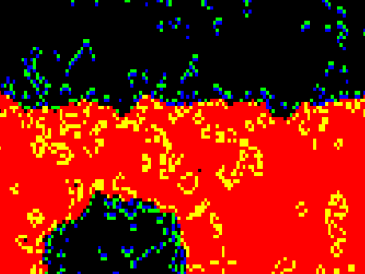
The JC rule EcoLiBra, consisting of Brain and AntiLife, each turned on by the red/black boundary.
But when the sea runs Brain and the land runs Life, the situation is no longer symmetrical. The pervasive presence of Brain's refractory state makes it less likely for a sea cell to have seven firing neighbors and be turned into a land cell. Unless we change the transition rules, the land will always melt away. So to give land a fighting chance, I now say that a sea cell becomes land if it has seven or six firing neighbors. Also I use better colors: Black, blue, and green for Brain; red and yellow for AntiLife.
| Firing EightSum | |||||||||
|---|---|---|---|---|---|---|---|---|---|
| CellState | 0 | 1 | 2 | 3 | 4 | 5 | 6 | 7 | 8 |
| (Brain is 0, 7, 12) | |||||||||
| 0 | 0 | 0 | 7 | 0 | 0 | 0 | 15 | 15 | 0 |
| 7 | 12 | 12 | 12 | 12 | 12 | 12 | 12 | 12 | 12 |
| 12 | 0 | 0 | 0 | 0 | 0 | 0 | 0 | 0 | 0 |
| (AntiLife is 15, 2) | |||||||||
| 15 | 15 | 0 | 15 | 15 | 15 | 2 | 15 | 15 | 15 |
| 2 | 15 | 15 | 15 | 15 | 15 | 2 | 2 | 15 | 15 |
EcoLiBra looks pretty good in RC, but if you look at this rule in JC, it seems a little too chaotic. The problem is that the rule is too lively. With the land borders turning on Brain in the sea, and the sea borders turning on Life on the land, the rule is just too fizzy to look interesting.
In looking at lots of cellular automata, Stephen
Wolfram
noticed what he considered four distinct classes of CAs. He
classifies a CA rule according to how it evolves from random starts.
The four kinds of pattern evolution he distinguishes
 are:
are:
A rule which dies out to a blank screen is of Class 1. Vote and Life, which die down to blocks and oscillators, are Class 2. A seething dog-barf pattern (such as so many of the Random rules) is Class 3. Brain is about the best example of a Class 4 two-dimensional CA. Christopher Langton speaks of Class 4 as "balanced" rules, as he sees them as lying between the "quiescent" Classes 1 and 2 and the "chaotic" Class 3. Intuitively this is all pretty clear. We are looking for CAs that are artificially alive, and we expect to find purposeful lifelike behavior somewhere in between death and chaos.
From a random start, Life and Vote exhibit "balanced," "artificially alive," or "class 4" behavior, but only for a short time. Their configuration space is densely seeded with point attractors and small-cycle attractors, so ultimately they are Class 2. Brain, on the other hand, seems to have a single large strange attractor in its configuration space. From practically any random start at all, Brain evolves to a very active balanced pattern filled with large amounts of structure. Can we use Brain's activity to keep Life interesting without tending into the chaotic as in EcoLiBra? Yes, with the Ranch rule I describe in [Rucker89].
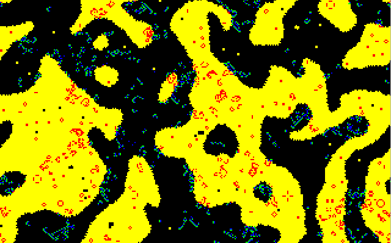
The JC Ranch rule. Vote determines the boundaries between the regions running Brain and Life. A firing cell changes from one rule to another when it crosses the boundary.
We divide the screen into "land" and "sea" as in EcoLiBra. But this time we run the land-sea division as an independent CA, using the rule Vote. And instead of using "holes" for one of the rules' firing cells, we think of Life and Brain as being different stages of each other. That is, the firing Brain cells from the sea can get ashore and become firing Life cells, and vice-versa.
The rule is really an overlay of two semitotalistic rules. Each cell can be thought of as having 4 bits of state: F, R, V, and M. The low bit F is the firing bit as usual. The next bit, R, is used to indicate Brain's refractory state. The bit above that, V, is used as an on/off bit for the Vote rule. And the highest bit M is a memory bit used to remember the last outcome of the Vote rule. If V and M are equal you know you are firmly on land or definitely at at sea. If V and M are different, you know that you are at the land/sea edge. The Ranch rule can then be specified as follows.
Suppose that EveryCell has binary state MVRF. (A state of 1101, for instance, would correspond to an inland firing life cell, and a state of 1001 would represent a firing cell that just got in the water and joined Brain). EveryCell's new V bit is always determined by a Vote among the neighboring V bits. EveryCell's new M bit is a copy of EveryCell's present V bit. EveryCell's new R bit is a copy of EveryCell's present F bit. If V=0, EveryCell's F bit obeys the Brain rule--that is, F goes to 1 if i) R=0 and ii) EveryCell's firing EightSum is 2. If MV=11 then EveryCell's F bit obeys the Life rule, that is F goes to 1 if i) F is now 0 and EveryCell's firing EightSum is 3 or ii) F is now 1 and EveryCell's firing EightSum is 2 or 3. If MV is 01, then EveryCell obeys a variant EdgeLife rule intended to make it easier for Braincells to get ashore. What is the EdgeLife rule? The rule that says F goes to 1 if the cell's firing EightSum is either 1 or 4. The colorpalette ERanch.JCC differentially stains the land's edge cells that get turned on.
I've implemented this rule as a JC rule. Writing it as a JC rule was a little bit tricky because at each update, each JC cell sees only one of its neighbors' bits. This means that to run Ranch, JC needs to alternate between updating the Vote rule and updating the Brain/Life/EdgeLife rule. Keep in mind that JC is an eight-bit rule, and that a state's bits are numbered from #0 up to #7 from right to left. Bit #0, the low bit, is the bit that your neighbors can see.
The idea for Ranch is to use bit #0 simply as a display window; use bits #1, #2, #3, and #4 as the bits F, R, V, and M we've been talking about; and use the high bit #7 to keep track of whether it is Vote or Brain/Life/EdgeLife that you're presently updating. You cycle between two behaviors, depending on whether Bit #7 is 0 or 1.
In Pascal it looks like this:
PROGRAM Ranch;
{This rule alternates cycles of Vote and Brain/Vote}
{The boundary is treated differently on the land side.}
USES Camake;
{$F+} {Required for function argument to genrule. }
FUNCTION
JCRule(Oldstate,NW,N,NE,W,Self,E,SW,S,SE:integer): integer;
{ We use the eight bits of state as follows: Bit #0 is used
to show either the firing or the vote bit to neighbors;
Bit #1 is the firing bit, Bit #2 is the refractory bit,
Bit #3 is the Vote bit, Bit #4 is the vote memory bit, and
Bit #7 is the cycle bit.}
VAR
Cycle,M,V,R,F,EightSum,NineSum,NewCycle,NewM,
NewV,NewR, NewF : integer;
BEGIN
Cycle:=(OldState SHR 7) AND 1;
M:= (OldState SHR 4) AND 1;
V:= (OldState SHR 3) AND 1;
R:= (OldState SHR 2) AND 1;
F:= (OldState SHR 1) AND 1;
EightSum:=NW+N+NE+E+SE+S+SW+W;
NineSum:=EightSum+Self;
IF Cycle=0 THEN {This is the update Vote cycle}
BEGIN
IF (NineSum5)OR(NineSum=4) THEN
NewV:=1 ELSE NewV:=0;
NewM:=V;
NewCycle:=1;
JCRule:=(NewCycle SHL 7) OR
(NewM SHL 4) OR (NewV SHL 3) OR
(R SHL 2) OR (F SHL 1) OR F
END;
IF Cycle=1 THEN {This is the update Firing cycle}
BEGIN
IF V=0 THEN {Use Brain rule at sea}
IF (R=0) AND (F=0) AND (EightSum=2)
THEN NewF:=1 ELSE NewF:=0;
IF (V=1) AND (M=1) THEN {Use Life rule inland}
IF (EightSum=3) OR ((F=1) AND
EightSum=2)) THEN NewF:=1 ELSE
IF (V=1) AND (M=0) THEN {Use EdgeLife on new land}
IF (EightSum=1) OR (EightSum=4) THEN
NewF:=1 ELSE NewF:=0;
IF V=1 THEN NewR:=0 ELSE NewR:=F;
{Only sea cells can be refractory}
NewCycle:=0;
JCRule:=(NewCycle SHL 7) OR (M SHL 4)
OR (V SHL 3) OR (NewR SHL 2) OR
(NewF SHL 1) OR V
END
END;
BEGIN {Main program}
{The Ranch.JCC palette looks only at bits 3,2, & 1.
Pattern meanings:
----001- is firing at sea
----010- is refractory at sea
----1-0- is dead on land
----1-1- is live on land
& others are dead at sea}
PalReq:='Ranch';
{We assume plane #7 is all 0s, for synchronized start.
We use RSeed to randomize plane #0 (to start Vote),
and plane #1 (to start firing)}
RSeedB:=0;
RSeedN:=2;
GenRule(JCRule);
END.
Ranch is a very interesting rule to watch. The Brain cells in the ocean sporadically colonize the banks of the land with Life, sometimes starting back-reactions which return new Brain cells to the sea. On the CAM-6, I once ran a Ranch pattern for a million steps. I think of Ranch as an artificial tide-pool.
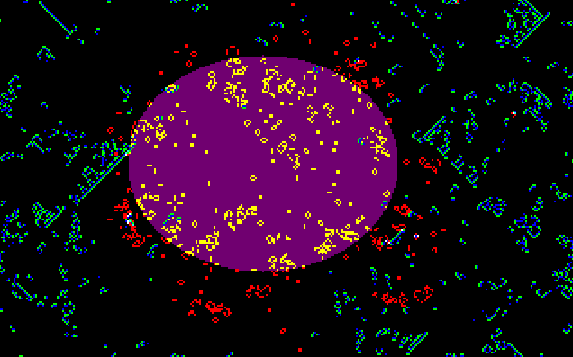
The JC BraiLife rule. Brain turns on Life cells in the purple region.
Ranch works best if the starting configuration is such that the Vote rule establishes two horizontal (or vertical) stripes of yellow land as well as a black on either side of a stripe of water. Since the screen is treated as a torus, if a stripe can wrap around it is safe from shrinking to nothing. The persistence of live Brain cells traveling along the black region is particularly well promoted by the presence the small manshaped Vote oscillator I call robotman. Under Vote, robotman spins about his horizontal axis like an acrobat. Every time a Brain glider hits robotman, he gets infected with red Life cells which burst back out of him to produce showers of new live Brain cells. He's good to lay eggs on. You can use the JC screen editor to draw a robotman in the Ranch sea.
One more of my crossbreedings of Life and Brain can be found on JC as the program called BraiLife. In BraiLife, Brain and Life run as independent rules, interacting only where plane 4 (state 16) has been turned on. In these masked regions, the presence of living Brain cell turns on a Life cell, and the presence of a living Life cell kills a Brain cell.
The basic idea of ASCII is that each cell keeps being set to the average state value of its neighbors. In ASCII each state is specified by sixteen bits which are displayed as a color and as an ASCII character. The order from most to least significant bits is 1) the four IRGB bits of background color, 2) four IRGB bits of foreground color, and 3) eight bits of ASCII code number. (Recall that IRGB is "intensity, red, green, blue.")
Many physical phenomena are governed by the Laplace equation. In heat or in magnetic field strength, one typically has a quantity Q that varies with the x and y position. Laplace's equation says that when such a system reaches equilibrium, we will have the sum of the second derivatives of Q with respect to x and with respect to y equal to zero.
Now if we focus on a cell of state C with four nearest neighbors of state N, E, S, and W, we can get a "difference equation" formulation of the fact that the second partial x and y derivatives sum to zero. The first derivative with respect to x at the cell is like the difference between the cell and one of its east or west neighbors. The second derivative is like the difference between two first derivatives. So the sum of the two second derivatives is like:
which is (N + E + S + W) - 4 C. To say that this value is zero is to say that:
| 0 | = | (N + E + S + W) - 4 C |
| 4C | = | N + E + S + W |
| C | = | (N + E + S + W) / 4 |
which simply means that at equilibrium, a cell's value C is to be the average of its neighbor cells' state values.
Numerical methods of solving Laplace's equation in fact use the method of repeatedly averaging the four neighbors, which is exactly what Rug and ASCII do when they are in the fast "Laplace" mode. Numerically, the alternate method of averaging the nearest eight neighbors is not quite right. Instead one is supposed to weight the sides 4 times as much as the corners so that
This method is implemented in JC as the rule *Laplace. Something approximating this method can be achieved by just giving Rug or ASCII a taste of the eightsum method every now and then...by tapping the l key.
The fact that what we are doing is finding equilibrium solutions for something like heatflow is particularly clear in the ASCII rule. You can go into Insert mode by pressing the Ins key, and then you can go and "paint in colors on the edges." Make sure that wrap is off, so that the screen borders are not being updated. You can select four different "temperatures" for the cursor mark by pressing one of the keys 0, 1, 2, 3.
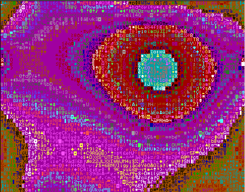
The RC ASCII rule in eightsum mode. Lines approximate isothermal lines for solution to the heat equation. Edge cells were fixed by randomizing and then turning off wrap to freeze their values. The circle in the center arose because the ZeroBlock has just been turned off.
If you color in some part of the border and let the rule run, you will see very physical looking isothermal lines. These lines are clearer if you go into bleach mode. For the most physics-like solutions, you should have the Increment set to 0. If the increment is not zero, what you are effectively doing is "color cycling" through different colors for the same areas. This is a kind of false animation technique.
When people do numerical simulations of partial differential equations, they tend not to want the screen to churn in the "chaos egg" or "mandala" patterns that Rug and ASCII can produce. The exciting screen which is "life" to us is an undesirable "numerical instability" to the analyst. Certain kinds of situations lead to numerical instability. Reducing the number of available states leads to instability--this can be done by pressing the v key. In a numerical solution of Laplace's equation, it is important to maintain a certain relationship between the "time steps" and the "space steps". When I reduce the number of available states, I am in effect taking bigger temperature steps with each update, which is like having larger lapses of time between the updates.
Heat flow and magnetic fields are fully described by Laplace's equation. Laplace's equation also plays a role in the analysis of the flow of fluids. If a cell is surrounded by high pressure cells of fluid, the cell's own pressure will go up.
Looking at ASCII in jog mode with bleaching on, we see things that seem very much like turbulent fluid flow. It is a little surprising how little difference it seems to make to the pattern whether I use a four cell "Laplace" neighborhood or a more complete eightcell neighborhood (remember that the l key toggles this choice).
The Sublime rule uses a trick from [Margolus&Toffoli87]. The idea is to imagine alternating between two kinds of cell neighborhoods: MargA and MargB. In each of these neighborhood systems, the cells are blocked into non-overlapping groups of four, and each cell can see only the four cells in its little block. The difference between the systems is that the MargB blocks are displaced diagonally one unit from the MargA blocks. So the MargB blocks do overlap with the MargA blocks. Let me illustrate.
Label some cell sites with letters:
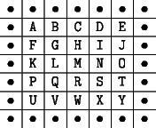
Grouped into MargA blocks:
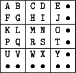
Grouped into MargB blocks:
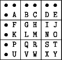
The Sublime rule works in two phases. In Phase A, the cells are blocked into MargA blocks, and each little block is rotated one quarter-turn clockwise or counterclockwise. In Phase B, the cells are blocked into MargB blocks, and each block is rotated one quarter-turn clockwise or counterclockwise. An external randomizer is used to decide which way to rotate.
The value of rotating a little block is that then we are sure that particles are conserved. If a block has one cell on and three cells off, then even after you rotate it a notch one way or the other, it will still have one cell on and three cells off. A problem in moving the gas particle around by rotating blocks is that it seems a gas particle will never get anywhere. It seems a particle must simply jiggle back and forth around a tiny four-cell circle.
This difficulty is solved by switching back and forth between the MargA and the MargB blockings. With a little luck a particle can wander from position A to position Y. It could happen as follows:
| Cycle | Rotate cell | Direction | Particle at |
|---|---|---|---|
| Start | |||
| A | ABFG | counterclockwise | F |
| B | .F.K | clockwise | K |
| A | KLPQ | clockwise | L |
| B | GHLM | counterclockwise | M |
| A | MNRS | clockwise | N |
| B | IJNO | counterclockwise | O |
| A | O.T. | counterclockwise | T |
| B | STXY | clockwise | Y |
Sublime is a pretty good model of thermally driven random diffusion, although the simulation is said to be more accurate if one uses a hexagonal lattice instead of the square lattice of our JC. It is of course possible, by the way, to create and run cellular automaton programs based on hexagonal lattices, though displaying them on a raster-screen takes some tinkering.
The PerfumeX
and PerfumeT
rules use a Margolus neighborhood technique
for simulating gasses, but they do not use any random input. The
gasses get into random-looking patterns simply by having their
component particles "bounce off each other." In the PerfumeX gas, when
we look at a four-cell Margolus block, we think of the particles as
trying to move diagonally in the direction of the center of the block.
The rules for the PerfumeX gas rule can be summed up symbolically as
follows. The idea is that each block on the left is to be replaced by
the corresponding block on the right. If a starting block is a rotated
form of one on the left, you replace it by the corresponding rotated
form of the one on the right.

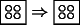
An empty block stays empty.
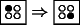
A particle in one corner of a block moves to the other corner.
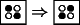
Particles in two opposite corners "bounce" off each other to the other two corners. This is the only kind of collision.
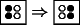
Particles in two adjacent corners "move through" each other to the other two corners.
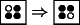
Particles in three corners "move through" each other; or, a hole in one corner moves to the other corner.
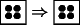
A full block stays full.
Although it is by no means evident the first time you hear about it, when you combine these rules (and their rotations) with a cycling between MargA and MargB neighborhoods, you get particles which move along the diagonals of the cell-lattice, changing direction only when they strike another particle. We implement "walls" off which the particles bounce by calling for the "collision" transformation whenever a block includes a cell of "wall."
PerfumeT is more simply described in words. As in PerfumeX, a block is said to be a colliding block if it has two cells on and two cells off, with the on cells diagonal from each other. In MargA phase, each non-colliding block is rotated one cell counterclockwise. In MargB phase, each non-colliding block is rotated one cell clockwise. Colliding blocks are never rotated. This produces horizontally and vertically moving gas particles that bounce off each other. If we redefine "colliding" to include "touching a wall cell," then the particles will also bounce off the walls.